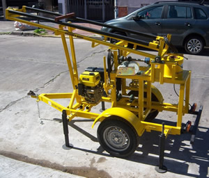
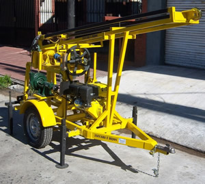
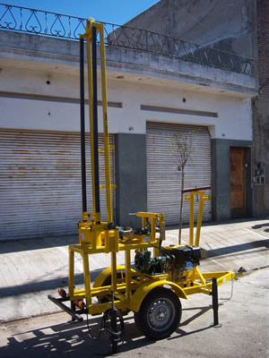

Pampa II v13



Este equipo en su versión II v13, viene con embrague de polea simple a palanca.
La mayor dificultad de suelo, la tosca mora.
Alcanza una profundidad (según las características de suelo) de 70 metros, 6”/7”.
Característica que comparte con su hermana la 3EN1 v12.
Equipo mediano pesado, con una parada de metro y medio cuadrado, lo que lo hace muy firme.
Motor 10 hp AM, bomba de lodos 50AT, vaina con morsa, malacate manual para 800 kg, linga, grillete, roldana con rulemán, torre para barras de 1500 mm, sistema de agua y mangueras (sin válvula de retención), junta de agua giratoria, soporte universal, embrague simple a polea, 4 patas regulables, enganche y cadena de seguridad, luces reglamentarias.
Caracteristicas
• Equipado con motor 10 hp AM • bomba de lodos 50AT • Vaina con morsa • malacate manual para 800 kg • linga, grillete, roldana con rulemán • torre para barras de 1500 mm • Sistema de agua y mangueras (s/ válvula de retención) • junta de agua giratoria • soporte universal • embrague simple a polea • 4 pata regulables • Enganche y cadena de seguridad • Luces reglamentarias • No cuenta con rueda de auxilio
Los chasis son homologables, pero tramites y gastos, corren por cuenta del comprador. Se deben contactar con un ing. Civil y enviar las fotos requeridas.